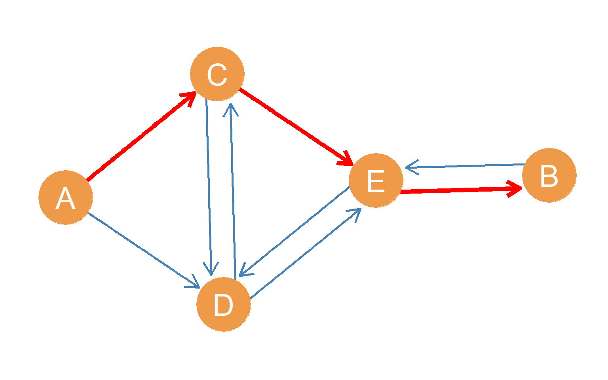
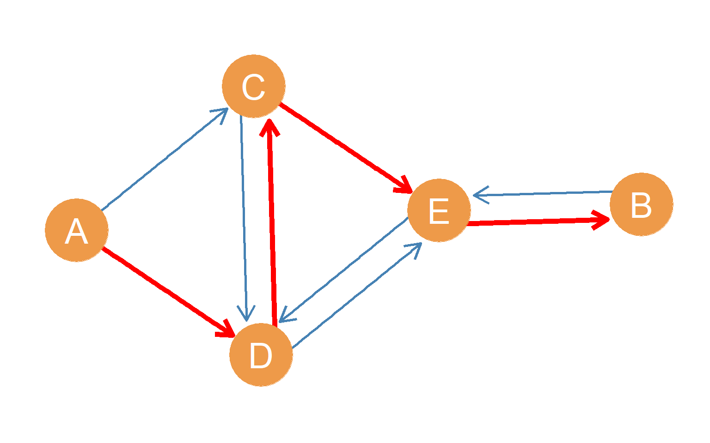
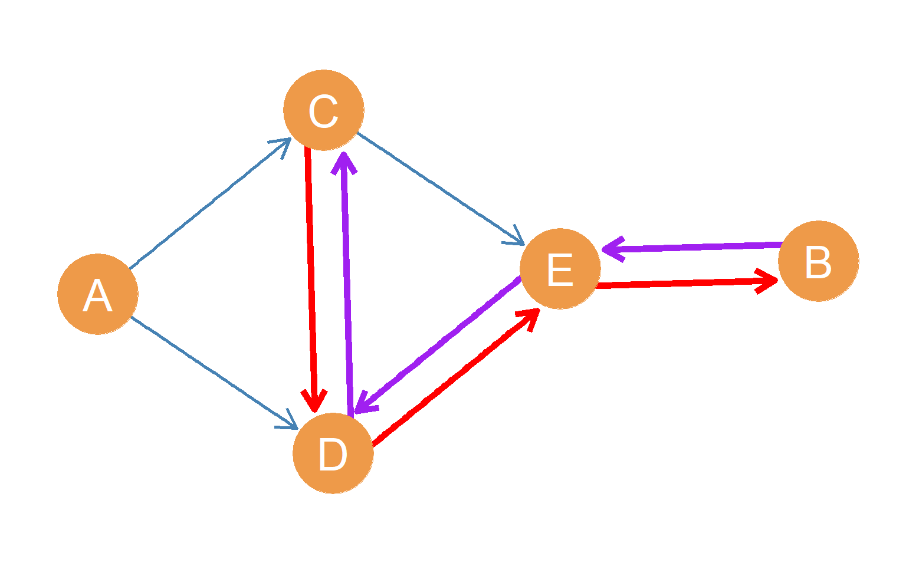
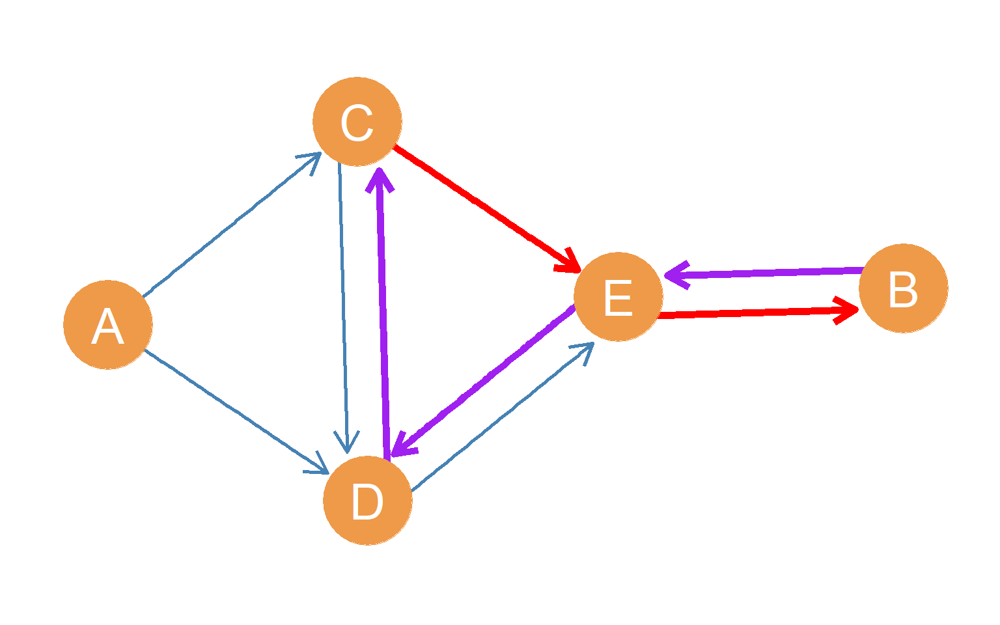
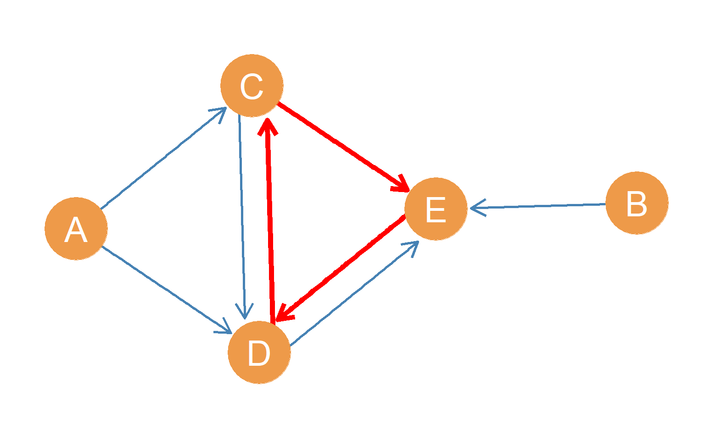

10 Directed Indirect Connections
What if the relationship we are studying is not symmetric like a similarity or a co-location but it is asymmetric like an interaction or an exchange (e.g., communication or advice) and we need to represent the resulting network using a directed graph? How do indirect connections work in the directed case? Well, it’s just like in the undirected case we saw in sec-indirect but with a couple of differences.
First, we have to respect the direction of the path (follow the arrows).
Second, just like asymmetric ties in directed graphs, directed paths can be non-reciprocal.
That is, there can be a directed path between two nodes \(A\) and \(B\) where \(A\) is the origin node and \(B\) is the destination node, but that does not mean that there is a directed path going \(B\) to \(A\), with \(B\) as the origin and \(A\) as the destination node.
Figure fig-dirpath1 shows an example of this situation. The highlighted red path goes from origin node \(A\) to destination node \(B\). However, note that if we were to start with node \(B\) and try to get a message or a package to node \(A\), there is no way we could do it by a path of any length in this graph, as long as we are forced to follow the direction of the arrows.
That means that while node \(A\) can reach node \(A\) by a directed shortest path of \(l_{AB} = 3\), node \(B\) cannot reach node \(A\) (\(l_{BA} = \infty\)). The reachability relation in directed graphs is therefore asymmetric.

This also brings up another difference between undirected and directed graphs when it comes to reachability. In the undirected case, as we will see in a future lesson, the only way that a node cannot be reachable other nodes in the graph is for the graph to be disconnected. In the directed case, on the other hand, a graph can be fully connected while at the same time some nodes being incapable of reaching others.
Note like before, there can be multiple directed paths of a given length connecting two nodes. In the case of \(A\) and \(B\), there is at least one other path of length 3 with origin node \(A\) and destination node \(B\). Can you see it?

Also like we saw in sec-directed, there can be directed paths of different lengths connecting pairs of nodes. For instance Figure fig-dirpath2 shows a highlighted red path of length \(l_{AB} = 4\) with origin node \(A\) and destination node \(B\) and edges \((AD, DC, CE, EB)\). In the case of \(A\) and \(B\), there is at least one other path of length 4 with origin node \(A\) and destination node \(B\). Can you see it?

10.1 Mutual Reachability
In directed graphs, some pairs of nodes can be mutually reachable. That is, there can be a directed path going from one node to the other, and vice versa. Figure fig-dirpath3 shows an example of this case involving nodes \(B\) and \(C\). Starting with origin node \(B\) we can get to \(C\) via the highlighted purple path of length \(l_{BC} = 3\) formed by the edges \((BE, ED, DC)\). In the same way, starting with node \(C\), we can get to node \(B\) via the separate, highlighted red path of length \(l_{CB} = 3\) formed by the edges \((CD, DE, EB)\).
For mutual reachability between two nodes to happen in a directed graph, the two paths do not have to be the same length in fact, in the case of nodes \(B\) and \(C\) node \(C\) can reach \(B\) via path shorter than length 3. This is shown in Figure fig-dirpath4), where we can see that \(C\) can reach \(B\) via the shortest path possible short of being directly connected \((l_{CB} = 2)\), formed by the edges \((CE, EB)\) (highlighted in red). On the other hand, \(B\) cannot reach \(C\) via a path shorter than 3.

10.2 Directed Cycles
Just like in the undirected case, a directed path that begins and ends with the same node is called a directed cycle. We refer to different cycles by the number of directed edges they include. For instance a 3-directed cycle is a directed cycle with three directed edges, a 4-directed cycle is a directed cycle with four edges and so forth. For instance, in Figure fig-dircycle, the directed 3-cycle features node \(C\) as both the origin and destination node involving the directed edges \((CE, ED, DC)\) is highlighted in red.
A directed graph that does not contain any cycles is a special kind of directed graph (composed of anti-symmetric ties) called a directed acyclic graph.
10.3 Types of Indirect Connections in Directed Graphs
In a directed graph, when pairs of nodes are mutually reachable they are also said to be strongly connected. Otherwise if nodes in a directed graph are connected via at least one directed path that only goes in one direction (like nodes A and B in Figure fig-dirpath3)), they are said to be unilaterally connected. Two nodes are said to be recursively connected when they are strongly connected and and at least one of the pairs of directed paths going in both directions use the same nodes (like paths \((BE, ED, DC)\) and \((CD, DE, EB)\) connecting nodes B and C in Figure fig-dirpath3)).
Finally, in a directed graph, two nodes are weakly connected if we can trace a path from one to the other, but only by ignoring the direction of the arrows! For instance, Figure fig-dirpath5 shows a directed graph in which nodes A and B have a weak connection via the \((BE, CE, AC)\) path (highlighted in red), although this is not the only weak connection they share.
Can you trace other weakly connected paths between nodes A and B in Figure fig-dirpath5)?